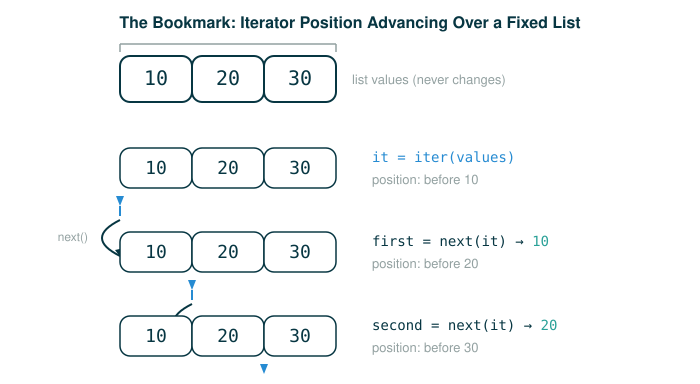

4.2.1 Lazy Computation and Iterator State
By the end of this lesson you will be able to do four things. You will explain how a sequence can exist without every one of its values being stored in memory. You will use the two core operations of Python's iterator protocol, iter and next, to walk through a sequence one value at a time. You will read the StopIteration signal that marks the end of a sequence. And you will explain why an iterator carries its own changing position, so that two iterators over the same data can sit at two different places at once.
The single habit to build here is this: stop treating "the data" and "where I am in the data" as the same thing. A list is the data. An iterator is a position that moves through the data. Once you separate those two ideas, everything in this lesson follows.
The Bookmark Model
Imagine reading a long book.
You do not photocopy every page before you can read page one. You open the book, read the next page, and keep a bookmark showing where to continue. The book holds all the pages. The bookmark holds one thing: where you are right now.
An iterator is that bookmark. The sequence of values is the book; the iterator is the slip of paper that remembers the next page to read.
sequence of values: A B C D
iterator position: ^
next value: AAfter you ask for the next value, the bookmark moves forward on its own:
sequence of values: A B C D
iterator position: ^
next value: BThis is a different mental model from a list, and the difference is the whole point of the lesson.

- A list stores a whole collection of values.
- An iterator stores a current position and knows how to produce the next value.
A book can have several readers, each with their own bookmark at their own page. In the same way, one sequence can have several iterators, each at its own position. Hold onto that picture; we return to it at the end.
Sequences Without Storing Every Value
A sequence can be represented without each element being stored in the computer's memory. We can build an object that gives access to all the elements of some sequential dataset without computing every element in advance. Instead, elements are computed on demand, only when they are actually requested.
You have already met an object like this: the range type from Chapter 2. A range represents a consecutive, bounded sequence of integers, but it does not hold each one of those integers in memory. When you ask a range for an element, that element is computed from the range's bounds. This is why a range can represent an enormous span of integers using almost no memory: only the end points are stored.
Here is the example exactly as it appears in the original text:
>>> r = range(10000, 1000000000)
>>> r[45006230]
45016230The surprising part is that not all 999,990,000 integers in this range are stored when the range is constructed. Instead, the range computes the answer: it adds the first element 10000 to the index 45006230 to produce 45016230.
Here is the same idea as an executable program you can run yourself:
# (1)
r = range(10000, 1000000000)
print(r[0])
print(r[1])
print(r[45006230])
Expected output:
10000
10001
45016230Read the indexing line one token at a time:
r[45006230]
├─ r ........... the range object: stores only the start and end bounds
├─ [ ........... begins an index lookup
├─ 45006230 .... the position we want
├─ ] ........... ends the index lookup
└─ evaluates to 45016230 (computed as 10000 + 45006230, not retrieved from storage)Computing values on demand, rather than retrieving them from an existing stored representation, is called lazy computation. In computer science, lazy computation describes any program that delays computing a value until that value is actually needed.
Eager Versus Lazy
An eager strategy does the work immediately, before anyone asks for the result.
make the whole list now
store every value
then allow selectionA lazy strategy waits, and does the work only when a specific value is requested.
remember the rule
compute a value only when askedHere is a small comparison you can run:
# (2)
eager = list(range(1, 6))
lazy = range(1, 6)
print(eager)
print(lazy)
print(lazy[3])
Expected output:
[1, 2, 3, 4, 5]
range(1, 6)
4The list prints all of its elements, because the list actually contains those elements. The range prints range(1, 6), because it is a compact representation of the sequence rule, not a stored collection. The range still answers lazy[3] with 4, because it can compute that value from its bounds the moment you ask.
Iterators
Lazy computation works neatly for a range because the sequence is uniform: any element is easy to compute from the start and end bounds. But most sequences are not that regular. Python and many other languages provide a single, unified way to process the elements of a container one by one, called an iterator. An iterator is an object that provides sequential access to values, one at a time.
The iterator abstraction has two parts:
- A way to retrieve the next element in the sequence being processed.
- A way to signal that the end of the sequence has been reached and no further elements remain.
For any container, such as a list or a range, you get an iterator by calling the built-in iter function. You read values out of the iterator by calling the built-in next function.
iter(sequence) -> create an iterator positioned at the start of the sequence
next(iterator) -> return the next value and advance the iterator's positionHere is the follow-the-line anatomy of each operation. First, creating an iterator:
iter(primes)
├─ iter ........ the built-in that produces an iterator
├─ ( ........... begins the inputs
├─ primes ...... the container to walk through
├─ ) ........... ends the inputs
└─ evaluates to a new iterator object positioned before the first valueThen, reading from it:
next(iterator)
├─ next ........ the built-in that advances the iterator
├─ ( ........... begins the inputs
├─ iterator .... the iterator to advance
├─ ) ........... ends the inputs
└─ evaluates to the next value, AND moves the iterator's position forward by oneThe final row of the next anatomy is the one to remember: a single call to next does two things at once. It hands you a value, and it changes the iterator so the following call starts later.
Reading Values With iter and next
The original text uses a list of prime numbers. Here is the interactive session exactly as it appears:
>>> primes = [2, 3, 5, 7]
>>> type(primes)
>>> iterator = iter(primes)
>>> type(iterator)
>>> next(iterator)
2
>>> next(iterator)
3
>>> next(iterator)
5In that session, type(primes) reports the class list, and type(iterator) reports the class list_iterator. They are two different kinds of object. The list is the container of stored values; the list_iterator is a separate object whose only job is to remember a position in that list.
Before running the official version, here is a smaller warm-up that prints those class names so you can see them directly:
# (3)
primes = [2, 3, 5, 7]
iterator = iter(primes)
print(type(primes).__name__)
print(type(iterator).__name__)
print(next(iterator))
print(next(iterator))
print(next(iterator))
Expected output:
list
list_iterator
2
3
5Read the line that creates the iterator one token at a time:
iterator = iter(primes)
├─ iterator .... the name we are binding
├─ = ........... assignment
├─ iter ........ the built-in that produces an iterator
├─ ( ........... begins the inputs
├─ primes ...... the list to walk through
├─ ) ........... ends the inputs
└─ binds iterator to a new list_iterator positioned before the value 2A few things are worth stating plainly about (3):
primesis a list, and it stores four numbers.iter(primes)creates a separate iterator object; it does not change the list.- Each
next(iterator)call asks the iterator for one value and moves its position forward.
The list itself still has all four numbers after these calls. The iterator is the object that remembers how far we have already walked.
Exhaustion and StopIteration
An iterator can run out of values. When that happens, asking for the next value has to mean something definite. The way Python signals that no more values are available is to raise a StopIteration exception when next is called. That exception can be handled with a try statement, the same exception-handling tool from Chapter 3: the code under try runs, and if it raises StopIteration, control jumps to the matching except block instead of crashing.
The original session continues:
>>> next(iterator)
7
>>> next(iterator)
Traceback (most recent call last):
File "<stdin>", line 1, in <module>
StopIteration
>>> try:
next(iterator)
except StopIteration:
print('No more values')
No more valuesRead the last line of the traceback first. The name StopIteration is the iterator protocol's way of saying "there is no next value." It is not a sign that something went wrong in your code; it is the normal, expected signal that the walk is finished. The try statement lets your program respond to that signal instead of crashing: the moment next raises StopIteration, control jumps to the except block and prints No more values.
Here is a self-contained executable version of the same idea, with a fresh iterator so you can run it from the top:
# (4)
primes = [2, 3, 5, 7]
iterator = iter(primes)
print(next(iterator))
print(next(iterator))
print(next(iterator))
print(next(iterator))
try:
print(next(iterator))
except StopIteration:
print('No more values')
Expected output:
2
3
5
7
No more valuesOne detail that trips people up: an exhausted iterator stays exhausted. Once it has handed out its last value, every further next call raises StopIteration again. The bookmark has reached the back cover, and it does not loop around to the start.
Iterator State Is Mutable
An iterator maintains local state to represent its position in a sequence. Each time next is called, that position advances. The state is part of the iterator object, and it changes over time.
before any next: positioned before 2
after 1st next: positioned before 3 (returned 2)
after 2nd next: positioned before 5 (returned 3)
after 3rd next: positioned before 7 (returned 5)
after 4th next: positioned past the end (returned 7)This is why two calls to next(iterator) can return different values even though the text of the expression is identical both times. The expression next(iterator) does not mean "return the first value." It means "return the next value according to this iterator's current position, then move that position forward."
# (5)
values = [10, 20, 30]
it = iter(values)
first = next(it)
second = next(it)
print(first)
print(second)
Expected output:
10
20Here next(it) appears twice with identical text, yet it produces 10 and then 20. That is the mutable state at work: the first call left the iterator pointing at a later position, so the second call started from there. Compare this with indexing, where values[0] would return 10 every single time, because indexing asks for a fixed position rather than the next unused one.
Step-by-Step Trace of the Position
It helps to watch the position change one call at a time. Step the block above and watch the it iterator's position advance from before 10 to before 20 to before 30 across the two next calls, while the values list on the side stays untouched.
The list values never changes through any of this. Only the iterator's position moves. The data source and the iterator position are related, but they are not the same object, and they do not change together.
Two Iterators Track Two Positions
Because each iterator carries its own position, two separate iterators can sit at two different places in the same sequence at the same time. Advancing one does not move the other.
There is one exception, and it is worth being precise about: two different names for the same iterator share a single position, because they are two labels on one object. Two separate iterators are two objects with two positions; two names for one iterator are one object with one position.
Here is the original session, which builds two iterators over one range and then makes an alias:
>>> r = range(3, 13)
>>> s = iter(r) # 1st iterator over r
>>> next(s)
3
>>> next(s)
4
>>> t = iter(r) # 2nd iterator over r
>>> next(t)
3
>>> next(t)
4
>>> u = t # Alternate name for the 2nd iterator
>>> next(u)
5
>>> next(u)
6Walk through what just happened. The names s and t are two separate iterators, made by two separate calls to iter(r). Advancing s twice positioned it to return 5 next. Then t was created fresh, so its first two next calls returned 3 and 4, completely independent of s. The line u = t does not make a new iterator; it gives the second iterator a second name. So calling next(u) advances the very same object that t names, which is why u continued from 4 to 5 and then 6.
Now look at where each iterator stands. Advancing the second iterator did not affect the first. The last value returned from the first iterator was 4, so it is positioned to return 5 next. The second iterator (named t, also named u) just returned 6, so it is positioned to return 7 next.
>>> next(s)
5
>>> next(t)
7Calling iter on an iterator returns that same iterator, not a copy. Python includes this behavior so that you can call iter on any value to get an iterator without first having to check whether the value was already an iterator or still a plain container.
>>> v = iter(t) # Another alterante name for the 2nd iterator
>>> next(v)
8
>>> next(u)
9
>>> next(t)
10So v, u, and t are now three names for one iterator with one shared position. Calling next through any of those names advances the same object, which is why the values keep climbing: 8, then 9, then 10.
Here is a runnable bridge that shows the core distinction with two separate iterators over one list:
# (6)
letters = ['a', 'b', 'c']
first_iterator = iter(letters)
second_iterator = iter(letters)
print(next(first_iterator))
print(next(first_iterator))
print(next(second_iterator))
Expected output:
a
b
aThe two iterators have independent bookmarks. first_iterator advanced twice, so it is now past 'b'. second_iterator had not advanced at all, so its first next call still returned 'a'. The data source and the iterator position are related, but they are not the same object.
Why Iterators Are Useful
The real power of iterators comes from the fact that the underlying series of values may never be represented explicitly in memory all at once. An iterator gives you a way to consider each value in turn, but the whole sequence does not need to be stored at the same time. When the next value is requested, it can be computed on demand instead of retrieved from storage.
A range can compute its elements lazily because its sequence is uniform: any element follows directly from the start and end bounds. Iterators extend lazy generation to a far broader class of sequences, because an iterator is not required to provide access to arbitrary elements. It only has to compute the next element, in order, each time another one is requested. This is less flexible than reaching for any element at any position (which is called random access), but sequential access to sequential data is often all a data-processing program needs.
⚠Common Beginner Traps
One trap is thinking that an iterator is the same thing as the list it came from. The list stores the values; the iterator stores a position for walking through them. Calling iter on a list does not change the list. Acting on this confusion fails concretely: iterator[0] raises TypeError: 'list_iterator' object is not subscriptable, and len(iterator) raises TypeError: object of type 'list_iterator' has no len().
Another trap is expecting next(iterator) to be repeatable the way values[0] is repeatable. Indexing asks for a fixed position and returns the same value every time. next asks for the next unused value and advances, so repeating it returns different values.
A third trap is thinking that a lazy sequence has no values. It has values; it simply computes or reveals them only when requested.
A fourth trap is forgetting that an exhausted iterator stays exhausted. Once there are no more values, every further next call raises StopIteration again. It does not restart from the beginning.
A fifth trap is confusing two separate iterators with two names for one iterator. Two iter(...) calls produce two independent positions. An assignment like u = t produces one iterator with two names and therefore one shared position.
✓Check Your Understanding
- Why can Python represent
range(10000, 1000000000)without storing every number in it? - Given
colors = ['red', 'green', 'blue'],a = iter(colors), andb = iter(colors), predict the four lines printed byprint(next(a)),print(next(a)),print(next(b)),print(next(a)), in that order. - Why do two calls to
next(iterator)usually return different values, even though the expression text is identical? - What does
StopIterationmean, and how can a program respond to it instead of crashing? - In the original session,
sandtare both iterators over the same ranger. Aftershas returned5, why istpositioned to return7rather than6? - The line
u = tis followed later byv = iter(t). Why dot,u, andvall share one position?
Show the answers
- A
rangestores only its bounds: start at10000, stop before1000000000, step by1. It computes each requested element from those bounds instead of storing the whole sequence, sor[45006230]is computed as10000 + 45006230. red,green,red,blue. The two iterators carry independent positions:aadvances throughredandgreen, thenb's firstnextreturnsredbecausebhas not advanced, anda's thirdnextcontinues toblue.nextadvances the iterator's internal position. After one call hands out a value and moves the position forward, the following call starts from that later position and returns the next value.StopIterationis the signal that the iterator has no next value. Atrystatement with anexcept StopIteration:block lets the program catch that signal and continue instead of crashing.sandtare independent iterators with independent positions. Thenextcalls that advancedt(including those made through its aliasu) left it positioned to return7, whilesadvanced separately and stopped just before5. They do not affect each other.u = tandv = iter(t)do not create new iterators. Callingiteron an iterator returns that same iterator, sot,u, andvare three names for one object, and one object has exactly one position.
§Summary
A sequence can be represented without storing every element, by computing values on demand. That idea is lazy computation, and a range is a simple example: it stores only its bounds and computes any element when asked. Python's general tool for sequential access is the iterator, an object that hands out values one at a time using iter to create it and next to advance it. An iterator carries its own mutable position, so repeated next calls return successive values, and the end of the sequence is announced by a StopIteration exception that a try statement can handle. Because each iterator tracks its own position, two separate iterators over the same data move independently, while two names for one iterator share a single position. This is what lets a program walk through huge or computed-on-demand sequences without ever holding all of their values in memory at once.
▶Step-Through Checkpoint
The next program is the lesson's capstone: it calls iter twice on one list and advances the results at different rates. Stepping through it draws the environment diagram that makes iterator state visible: in memory there sit one shared list and two separate list_iterator objects, each holding its own position, so you can watch left's bookmark advance twice while right's stays pinned at the front. Before you step through the block below, write down three predictions: how many separate objects exist after the first three statements run, what values a and b are bound to, and whether the last line binds c to 4 or to 6.
# (7)
numbers = [4, 5, 6]
left = iter(numbers)
right = iter(numbers)
a = next(left)
b = next(left)
c = next(right)
Step through it one line at a time and check each prediction as the bindings appear. There are three objects: numbers bound to one list, and left and right bound to two separate iterators, because each iter call on a list produces a fresh one. The names a, b, and c finish bound to 4, 5, and 4. Advancing left twice never moved right, whose first next call still returned the front of the list. The list never changes; only the two iterator positions move, and they move at their own pace.